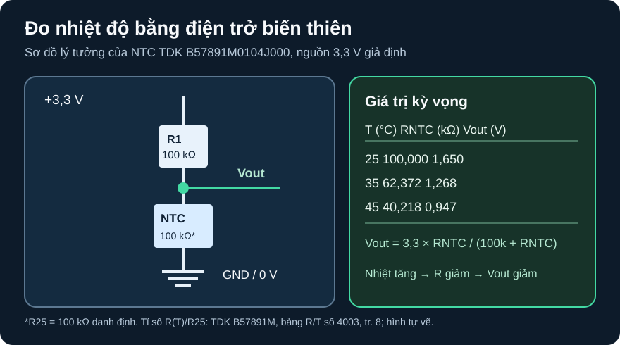

Điện Trở Chức Năng & Phép Đo
Biến nhiệt, ánh sáng và dòng điện thành tín hiệu có thể tính, kiểm và hiệu chuẩn.
- Phân biệt biến trở, NTC, PTC, LDR và shunt theo đại lượng kích thích, chiều thay đổi R và giới hạn đo.
- Đọc bảng R/T của đúng mã NTC để tính điện áp chia áp tại ba nhiệt độ.
- Lập phép kiểm hai điểm có đầu vào, công thức, giá trị kỳ vọng và mục sai số cần ghi.
- Giải thích vì sao tự nung nóng NTC, điện trở đầu vào của thiết bị đo và sai số ADC có thể làm lệch kết quả.
Điểm nối từ D06 và D25: các bài trước đã giới thiệu phép đo và cảm biến nhiệt. A02 đi sâu vào việc dùng đường đặc tính của đúng part, chuyển R thành V, rồi tách sai số cảm biến khỏi sai số mạch đo. “Điện trở thay đổi” không tự động là cảm biến đã hiệu chuẩn.
1. Chọn cơ chế biến đổi trước khi tính mạch
| Phần tử | Đại lượng tác động | Đọc gì trong tài liệu gốc? | Dùng để làm gì? |
|---|---|---|---|
| Biến trở/chiết áp | Vị trí cơ học của cần gạt | Tổng R, luật tuyến tính/log, công suất trên track/wiper, số chu kỳ. | Tạo điểm đặt hoặc chia áp điều chỉnh; wiper hở phải được tính trong thiết kế thật. |
| NTC | Nhiệt độ tăng → R giảm trong miền đặc tính của part. | R25, dung sai, bảng R/T, hệ số B hoặc bảng nội suy, công suất đo, thời hằng nhiệt. | Ước lượng nhiệt độ hoặc bù nhiệt. |
| PTC | Nhiệt tăng có thể làm R tăng mạnh quanh vùng chuyển. | Đường R/T, điện áp/dòng cho chế độ cảm biến hay bảo vệ; không tráo hai mục đích. | Báo quá nhiệt hoặc bảo vệ theo dòng được thiết kế. |
| LDR/quang trở | Chiếu sáng làm đổi R theo phổ, độ rọi và lịch sử ánh sáng. | Đường R–độ rọi, đáp ứng phổ, thời gian tăng/giảm, nhiệt. | Phát hiện mức sáng khi độ chính xác và tốc độ phù hợp. |
| Shunt | Dòng qua R tạo sụt áp V=IR. | R, dung sai/TCR, công suất, kết nối Kelvin và điện áp common-mode của mạch đo. | Đo dòng; chọn điện áp rơi đủ đo nhưng không phá ngân sách nguồn. |
TDK/EPCOS B57891M, Jan 2018, tr. 2–3 và tr. 8 cung cấp R25, B25/100 và bảng R/T của NTC được dùng dưới đây. TDK, PTC Thermistors—General Technical Information giải thích đường R/T và điều kiện công suất đo của PTC; Vishay, thông tin current-sense/Kelvin cho lý do dùng bốn cực ở điện trở nhỏ. Advanced Photonix NSL-RHS99 Series, Rev. A, bảng Typical Electro-Optical Specifications minh họa rằng R khi sáng phải gắn độ rọi, nhiệt độ màu và trạng thái thích nghi sáng của đúng họ LDR đó; không dùng các trị số ấy cho LDR vô danh. Các nguồn này không cấp pinout cho bất kỳ module bán lẻ nào.
2. Ví dụ có mã part: NTC thành điện áp
Chọn TDK/EPCOS B57891M0104J000, họ B57891M chân cắm, R25 = 100 kΩ, dung sai R25 ±5%, đường R/T số 4003, B25/100 = 4450 K theo bảng đặt hàng tr. 3. Số 100 kΩ ở 25 °C là danh định; đường R/T tr. 8 là đường tỷ số dùng cho tính kỳ vọng, không thay cho sai số cá thể. Không có module hay board nào được chọn trong bài.

Mô tả đầy đủ bằng chữ
Nguồn lý tưởng 3,3 V nối qua R1 cố định 100 kΩ đến nút Vout. Từ Vout, NTC B57891M0104J000 nối về GND 0 V. Đồng hồ hoặc ADC nếu dùng sẽ đo Vout so với GND, và có thể tải nút này. Ở 25 °C, RNTC danh định 100 kΩ nên Vout 1,65 V. Ở 35 °C RNTC 62,372 kΩ nên Vout xấp xỉ 1,268 V; ở 45 °C RNTC 40,218 kΩ nên Vout xấp xỉ 0,947 V.
- Datasheet ghi tại 25/35/45 °C, tỷ số
R(T)/R25lần lượt1,00000 / 0,62372 / 0,40218(bảng R/T số 4003, tr. 8). Nhân với 100 kΩ thuRNTC = 100 / 62,372 / 40,218 kΩ. - Với R1 ở phía trên và NTC ở phía dưới,
Vout = 3,3 × RNTC/(100 + RNTC)nếu R tính bằng kΩ. Tại 25 °C:3,3×100/200 = 1,650 V. Tại 35 °C:3,3×62,372/162,372 ≈ 1,268 V. Tại 45 °C:3,3×40,218/140,218 ≈ 0,947 V. - Đây là điện áp **kỳ vọng danh định**, không là sai số nhiệt độ cuối cùng. Cần xét sai số R25 ±5%, R1, điện áp nguồn, nhiệt tự nung, tiếp xúc nhiệt, trở kháng đo và chuyển đổi ADC.
| Nhiệt độ | R/R25 | RNTC danh định | Vout lý tưởng |
|---|---|---|---|
| 25 °C | 1,00000 | 100,000 kΩ | 1,650 V |
| 35 °C | 0,62372 | 62,372 kΩ | 1,268 V |
| 45 °C | 0,40218 | 40,218 kΩ | 0,947 V |
3. Vì sao đồng hồ hoặc ADC có thể đổi chính Vout?
Thiết bị đo có trở kháng đầu vào hữu hạn, nên trở thành một nhánh tải từ Vout xuống GND. Khi đó điện trở nhánh dưới là Rduoi = RNTC || Rdo; phải dùng Vout = 3,3 × Rduoi/(R1 + Rduoi). OpenStax College Physics §21.5 giải thích đồng hồ đo áp lấy dòng và làm thay đổi mạch đang đo. Chưa chọn đồng hồ hoặc board, bài không gán một trở kháng ADC chung cho mọi MCU.
Ví dụ giả định riêng một voltmeter có Rdo=1 MΩ: tại 25 °C, Rduoi=100k||1M≈90,91 kΩ và Vout≈1,571 V, thấp hơn 1,650 V lý tưởng khoảng 0,079 V. Đây không phải đặc tính của một đồng hồ hay ADC cụ thể. Với ADC thực còn phải xem thời gian lấy mẫu, tụ sample-and-hold, điện áp chuẩn và độ chính xác; một trở kháng DC không tự chứng minh phép đọc ADC đã chính xác.
NTC cũng tự nóng khi có dòng qua nó. Datasheet B57891M tr. 2 nêu hệ số tản nhiệt trong không khí xấp xỉ và công suất cực đại tại 25 °C; những số đó tùy điều kiện môi trường. Ở điểm 25 °C của mô hình, dòng 3,3/200k=16,5 µA, công suất trên NTC I²×100k≈27,2 µW. Công suất nhỏ không bảo đảm sai số tự nung bằng không trong mọi chất lỏng, vỏ hộp hay luồng gió; cần xác nhận môi trường và cách đặt cảm biến.
4. Hoạt động tái lập và kế hoạch hiệu chuẩn
Mở datasheet TDK B57891M, ghi mã
B57891M0104J000, revision Jan 2018, R25, dung sai, số đường 4003 và ba hàng 25/35/45 °C. Đừng lấy bảng của mã 10 kΩ hoặc số R/T khác.Tạo cột
T,r=R/R25,R=100000×r,Vout=3,3R/(100000+R). So bảng ở trên; sai số làm tròn của Vout nên dưới 0,002 V. Có thể thay bảng tính bằng DC sweep dùng điện trở tham số đúng ba giá trị và nguồn 3,3 V lý tưởng; lưu netlist/model nếu thực sự chạy.Thêm cột với tải đo giả định
Rdo=1 MΩ; dùngRduoi=R×Rdo/(R+Rdo)rồi tính Vout tải. Ghi chênh lệch và giải thích chiều lệch. Sau đó dựng kế hoạch hiệu chuẩn hai điểm: nếu có hai môi trường tham chiếu đã được đo độc lập, lưu nhiệt độ tham chiếu, điện áp raw, điện áp nguồn, dụng cụ, thời gian ổn định và độ không chắc chắn. Không biến hai điểm kỳ vọng datasheet thành “đã hiệu chuẩn”.
Cổng phần cứng: trước khi nối vào MCU phải chốt mã/revision board, mức nguồn, chân ADC, giới hạn đầu vào, trở kháng nguồn cho thời gian sample, NTC/module đúng loại, R1, dụng cụ và người duyệt. Bài này không xác nhận dây nối, nhiệt kế chuẩn hay phép đo thật. Chỉ dùng nguồn thấp áp cách ly khi kế hoạch lắp được duyệt.
1. Vout=3,3×50/(100+50)=1,10 V. Với NTC, R thấp hơn 100 kΩ nghĩa là nhiệt tăng so với điểm danh định 25 °C nếu đang ở cùng đường R/T. Không thể gán 50 kΩ cho một nhiệt độ chính xác nếu không tra/nội suy bảng của part, xét dung sai và điều kiện nhiệt.
2. Rduoi=(100k×1000k)/(100k+1000k)=90,91 kΩ; Vout=3,3×90,91/(100+90,91)≈1,571 V. Một nguồn sai số hợp lệ: sai số R1, sai số R25, nguồn 3,3 V, nhiệt tự nung, hoặc ADC.
Rubric 4 điểm: 1 điểm vẽ/hiểu đúng R1 trên–NTC dưới và tải đo song song; 1 điểm công thức và đơn vị; 1 điểm kết quả 1,10 V, 90,91 kΩ, 1,571 V; 1 điểm giới hạn suy nhiệt và ít nhất một sai số còn thiếu.